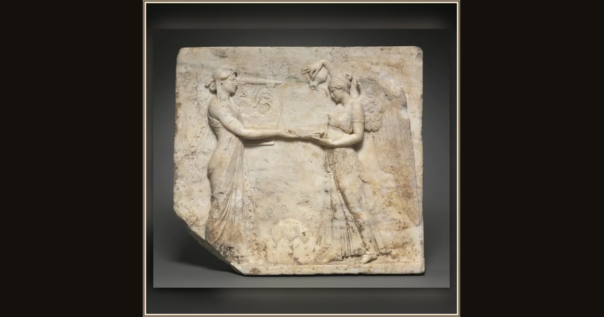

Relief of Apollo with Nike
Italy, Roman, Augustan period · 27 BCE–14 CE · cma
Apollo stands beside his lyre facing winged Nike, who pours into a vessel; at Delphi he promises to guard Orestes to the end (64). Explore its place in Aeschylus's Plays, Eumenides, line 64.